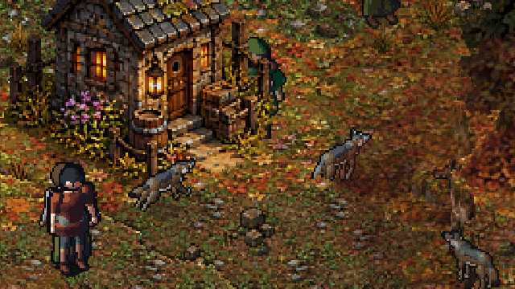
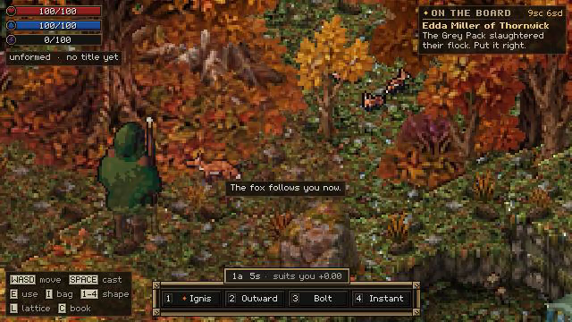
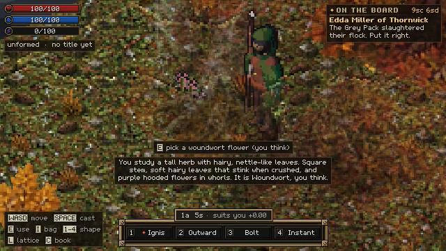
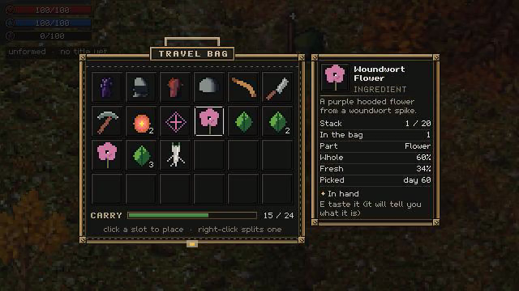
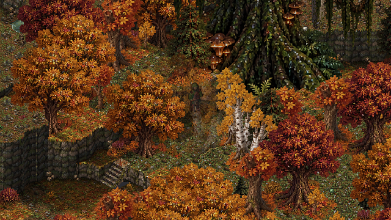
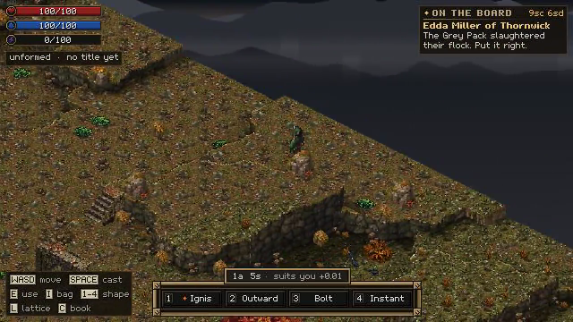
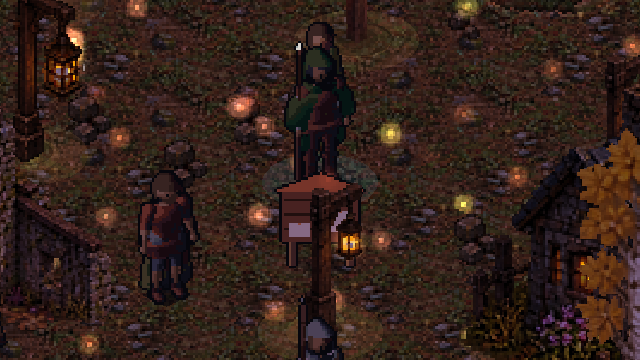

Day four: the water wakes up, every wolf is someone, and a fox follows you home
25 September 2026 · Day 4
Day four was about life. Lakes got depth, shallows and waterfalls, then reeds, frogs that croak in a chorus after dark, herons that hunt them and fireflies over the shore. Every animal is now an individual, and a body left in the grass rots and feeds the scavengers. Herbs can be picked, dried and mistaken for their poisonous lookalikes, mountains grew tall, and for the first time a creature will follow you home: a fox you win over with meat.

The water wakes up
Water used to read as blue grass: one flat painted texture running straight up to the land. Now it's drawn in layers, with sandy shallows at the edge, a shelf you can see drop away, and then dark deep water. Waves lap at the beaches, and waterfalls pour: water crests at the lip, streaks fall at their own speeds, and the pool below churns white.
Then the water filled up with life. Reeds and cattails grow in the shallows, and lily pads float on calm water. Frogs sit on the pads, sitting up to watch you and leaping in with a plop when you come too close. They croak, now and then by day and a lot after dark, and one croak sets off the next, so a chorus builds on its own as night falls. Dragonflies hover and dart over the shallows, and at dusk they settle on the reed tips to sleep. Herons wade the edges of big ponds, still as a post, freezing when a frog or fish comes within reach, then striking. Fireflies come out at dusk near the water and the edge of the woods, each pulsing on its own beat, fading at dawn. Fishing landed too: cast from the bank, a fish comes to look, and you strike on the bite.
Everything eaten comes back slowly, out of sight, so a pond never runs dry, and the frogs' croaks and the heron's call are synthesised from code like every other sound in the game.
Every wolf is someone
The wolf used to be built from boxes. It has been redrawn with a deep chest, long legs, a cream ruff and amber eyes, and the matriarch is bigger and near-black with a silver mane and one torn ear. While redrawing them the team found that most wolves had always been drawn facing the wrong way, their sprite sheet storing directions in a different order from the one the game read them in.
Then every animal became an individual, fixed for life by its seed: a build, a coat, an age and scars. What you get from a body follows from what it was. A black wolf gives a black pelt, a heavy one gives more meat, an old one has worn fangs, and a scar spoils the hide.

They live between fights too. Wolves sniff, sit, scratch, shake, lie down and sleep, more at night, and at dusk one may howl and the pack answers. In a fight they circle you and come in to bite, feint, leap, limp when hurt and cower when cornered, instead of stacking on one spot. Deer herds graze at the edge of the woods, looking up when you come near and bolting together, the nearest first. Bodies rot, moving from fresh to bloated to rotten before ending as bones that sink into the grass, and scavengers come: crows by day, a hungry wolf that takes a body over, and a fox at night.
A fox that follows you home
Minions have lived in the simulator since day three. Now one is in the game. Most fox earths have a litter of cubs that play at the mouth of the den by day and bolt inside when you come close. Put meat down from your bag, keep still, and come back over a few days. A cub that has eaten from you enough times follows you, with its own coat and look, and it's still with you after you save and come back.

Herbs you can be wrong about
Wild woundwort grows on woodland edges and stonecrop on stony ground. Study one to learn what it looks like, then pick a flower or a leaf and the plant regrows by the day, though digging up the root takes it for good.

The twist is that you can be wrong. A poisonous lookalike grows beside almost every useful herb, so what you pick is named as best you can tell, until you're sure. You get better with practice. Tasting always tells you the truth, at the cost of a little health if you guessed wrong, or you can ask the village herbalist, who is good, but can be wrong too. After picking, herbs can be dried on a rack and ground into powder, though powder from a lookalike looks exactly the same.

Taller mountains, wider rivers, giant trees
Mountains now look like mountains, following the altitude bands so alpine country sits far higher than it used to, each biome with its own shape of ground: ridged ranges, badland mesas, lone karst towers, dunes and flat marsh. Rivers widen as they go, growing as tributaries join them. Trees are much bigger, a grown oak now four or five people tall, and deep in dense woods an old giant occasionally towers over a glade at its roots, one that can never be felled.
Four magical biomes now grow where ley lines cross the land, each real country with one thing wrong: a moor where storms keep striking the same black tors, a fen with pools that climb uphill, a chalk down with barrows that lead nowhere, and a savanna whose ground never stops smouldering. They glow at night, and slimes of their essence gather there.



Under the bonnet
The game's main file had grown large enough that half of all changes touched it, so parallel work kept colliding there. Over several steps, walking, interaction, casting and hits moved into the tested core. Nothing plays differently, except that a crash tied to summoning the matriarch is gone. Villagers now roll their own dice, so adding one person no longer changes everyone else's luck.
Weather and earthquakes now exist underneath the game, though you can't see them yet. Weather comes from each place's climate, with fronts, rain, snow, fog and storms. Faults run through the mountains, quakes build and slip, and a big one can tear the ground open.
Where it stands tonight
Playable now: everything from day three, plus water with depth, waterfalls and life in it, fishing, hunting and skinning, wolves and deer with lives of their own, carrion and scavengers, herbs to find, dry, grind and misname, and a fox to tame. The forged world has tall mountains, wide rivers, giant trees and four magical biomes.
Not yet: painted art for any biome but autumn, weather you can see, commands for followers and any minion other than the fox, melee and archery, and multiplayer play.
End of day four: 2,580 passing tests, 63 pull requests merged, 48 biomes.